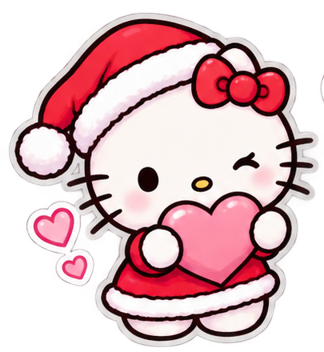
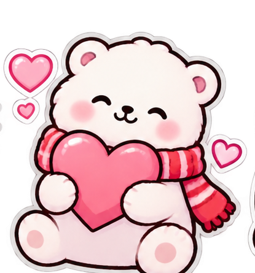

FROM PUCHU, WITH ALL MY LOVE

My Dearest Kuchuuu,
Heyyy, my Kuchuuu. ❤️
Sooo... you found your way here. I wish I could see your face right now. I wish I could sit beside you, pull you close and tell you all of this while holding your hand.
I made this little world because I wanted to give you something that you could explore, something that would make you smile and remind you that somewhere, there's a Puchu who thinks about you in the smallest moments of his day.
But Kuchuuu, there's something more important than all these stars, gifts and little surprises. There's something I really want you to remember.
YOU ARE LOVED. YOU ARE CARED FOR. AND YOU ARE SO, SO DESERVING OF ALL THE GENTLENESS IN THIS WORLD.
And please, my girl, don't ever think that you have to keep everything inside just because you cannot explain what you're feeling.
You don't always have to tell me what's wrong. You don't have to arrange your thoughts, find the perfect words or explain every little thing before coming to me.

Sometimes you might not even know why you're sad. Sometimes you might just want to cry. And that's okay, Kuchuuu. You don't have to figure everything out before letting yourself be held.
If you cannot say anything, just come to me. Lay your head on me. Hold my hand, hug me, or simply stay quiet beside me.
I won't ask you a hundred questions. I won't judge you for what you're feeling. I won't make you feel that you need a reason to deserve comfort. If all you need is a hug, then let me give you that hug.
I wish I could be there to wipe your tears, kiss your forehead, hold you a little tighter and remind you that you don't have to go through every difficult moment pretending to be strong.
YOU NEVER HAVE TO EARN MY GENTLENESS BY BEING OKAY.
And on the days when you feel unlovable, when you doubt yourself, or when everything feels a little too much, I hope you won't forget that you are still deserving of love, care, patience and affection.
You don't have to be happy all the time for me. You don't have to pretend, either. I want the real you. The talkative you, the sleepy you, the silly you, the quiet you, and even the you who doesn't know what to say.
I may not always be able to fix whatever is hurting you, but I would still want to sit beside you through it. And if you ever need a little reminder, I'll gladly give you one.
I hope this little Christmas world feels like a warm hug from me. Not because it is perfect, but because every little part of it was made with so much love for you.
I wish I could be beside you right now, Kuchuuu. But until I can, imagine me holding you close, giving you a forehead kiss and whispering...
"It's okay, baby. You don't have to say anything. I'm right here. Come here, let me hold you."
I love you, my Kuchuuu. Please be gentle with yourself. You deserve that, too.
Always your Puchu,
♡
THIS LITTLE WORLD WILL ALWAYS HAVE YOU IN IT